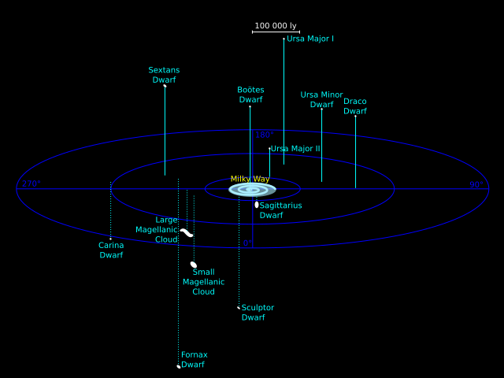

The Large and Small Magellanic Clouds (LMC and SMC) are the two most massive satellite galaxies around our Milky Way.
They are named after Fernão de Magalhães (Ferdinand Magellan, or Fernando/Hernando de Magallanes), a Portuguese explorer best known for the first circumnavigation of the globe.
However, Magellan was not an astronomer—or even the first person to observe or record these galaxies! The LMC and SMC were known by Indigenous communities around the world for centuries before Magellan ever saw them. We believe that it does not make sense to continue naming them after a person who did not discover them. To this end, we are pursuing (among other goals) an IAU resolution to rename the Clouds.
You can learn more about this movement using the links below! If you'd like to get in touch, please use the contact form at the bottom of this website.